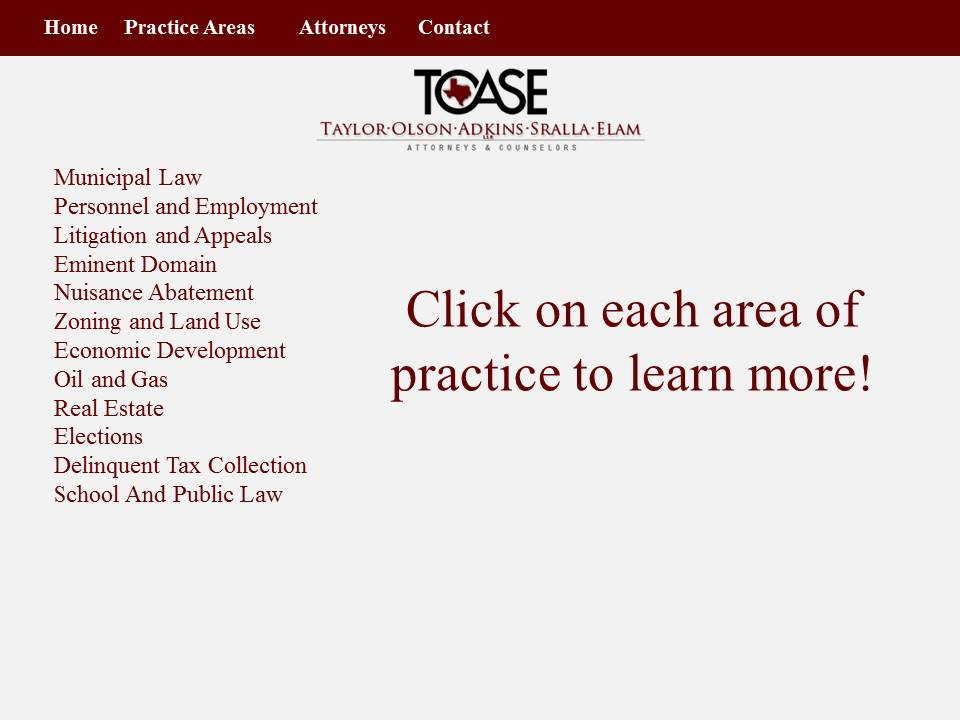
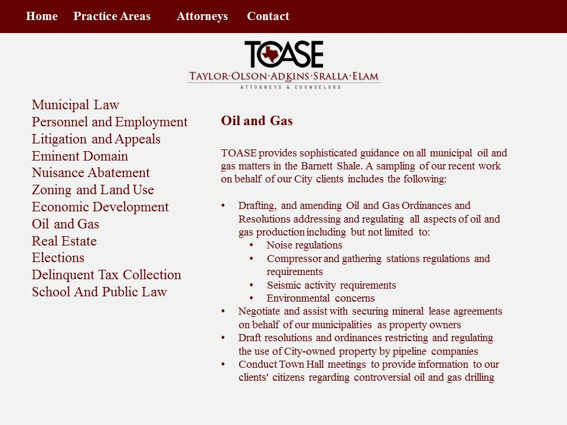

In this website I used 3 different DHTML features to enhance use experience.
The first feature I used is an inner HTML feature on the home page to give users an interactive way to learn a small bit more about TOASE. I set up links to each of the three TOASE brand promises to their client. Listed out in text as Experience, Quality, and Dedication the images above each are links to the corresponding pages that expand on each value.
The second DHTML feature is a smooth scroll feature on the Practice Areas page. This feature has links set up on the left hand side of the page that then allows the sure to quickly scroll down to that side of the page, then return to the menu at the top by a return to the top link placed below each section. This feature was to replace an AJAX/XML feature I did not have time or expertise to implement in this site. I will provide a mock up for the feature and explain it below.
AJAX/XML Feature: The AJAX/XML feature I chose was an interactive feature that allows the user to click on a link and then retrieve an XML file that is then printed on the page for the user to see more information about their chosen topic. Mock up below. The third DHTML feature is a pop up window feature on the Attorneys page. This feature allows the user to click on the photo of a lawyer and a new smaller window will pop up showing the lawyers background and credentials. That way the user can quickly learn about the lawyers they are interested in and then go back to the rest.
Mockups for AJAX/XML Feature
 Finally for my last feature I used an inquiry form that allows users to reach out to TOASE and ask questions about TOASE’s services. This form uses php to validate and submit data into a database. The data is then printed out on a TOASE admin page that only TOASE employees will have the web address to. At this time the feature does not completely work as MySQL database though UTA does not have allow new information to be submitted into my database tables. It says “No privileges” on the home page.